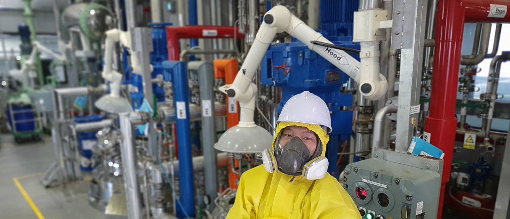

공장
공장
우리 (주)CMDL은 사업 개시이래 OLED 양산 환경 변화와
시장 확장에 따라 지난 2013년 6월에 완공되었습니다.
이로써 우리는 초고순도 품질을 만족하고 급변하는 전자재료 시장 환경에 즉각 대응할 수 있었습니다.
전용 면적 7300m3 의 부지에 합성동과 승화 정제동으로 구분되며, 월 4톤 규모의 0.3m3 ~ 6m3 의 SUS 및 G/L 반응기 및 월 1톤 규모의 승화정제 설비 갖추고 있습니다.
또한, 고객의 요구에 따라 모든 설비를 유연하게 즉각적으로 조치가 가능합니다.